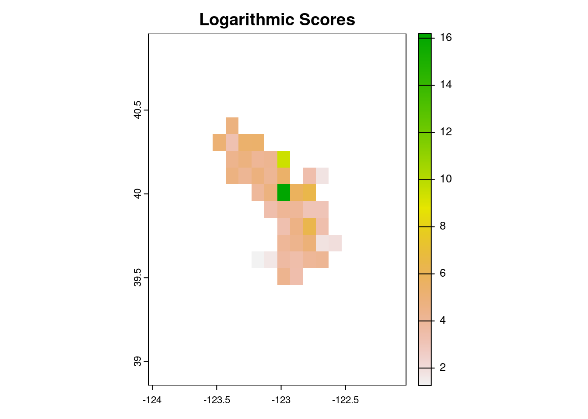

knitr::opts_chunk$set(message=FALSE, warning = FALSE)
suppressPackageStartupMessages(source("packages.R"))
for (f in list.files(here::here("R"), full.names = TRUE)) source (f)spatial_forecast_example
We will demonstrate the work that we’ve done using an example of a post burn area.
fire_box <- fire_bbox(fire = "august_complex", pad_box = TRUE)First, we need to ingest our data. We do this by interfacing with the Microsoft Planetary Computer’s STAC Catalog using the function ingest_planetary_data(). We specify a start date, end date, and a bounding box.
Optionally, we can also specify the desired spatial and temporal resolution for the challenge. Importantly, these choices are independent of the original resolution of our chosen MODIS Leaf-Area Index product (also configurable), reflecting whatever the appropriate spatial and temporal scales are to probe the focal ecological processes. Here we choose a 30 day interval on a 0.1 degree grid resolution (nearly 1 km resolution), which is about half the resolution of the underlying 500m, 16 day MODIS LAI product. Averaging over the original data helps both focus the challenge on the longer-term trends of recovery after disturbance rather than smaller-scale fluctuations. It can also make the data easier to work with. All the same, this resolution may be too coarse for many smaller fire events.
# Ingest data ------------------------------------------------------------
gdalcubes::gdalcubes_options(parallel=TRUE)
# use ingest_planetary_data function to extract raster cube for fire bounding box between Jan 1 2002 and July 1 2023.
raster_cube <- ingest_planetary_data(start_date = "2002-01-01",
end_date = "2023-07-01",
box = fire_box$bbox,
srs = "EPSG:4326",
dx = 0.1,
dy = 0.1,
dt = "P30D",
collection = "modis-15A2H-061",
asset_name = "Lai_500m")Next, we want to generate and store a target file to evaluate our (eventual) forecast. We can do this using the function create_target_file().
# create target file
date <- '2023-06-01'
target <- create_target_file(cuberast = raster_cube,
date = date,
dir = "/vsis3/spat4cast-targets",
mask = fire_box$maskLayer)Now, we want to create a climatological forecast. The function spat_climatology() builds a climatology forecast using historical data for a given month, and stores an ensemble of geotiff files. In the event that there are missing historical data for a given month, missing values are imputed using a simple bootstrap re-sample of previous values within a pixel.
Once again, for pipeline purposes, spat_climatology returns the directory that ensemble forecasts were written to.
# Forecast ----------------------------------------------------------------
ensemble_forecast_dir <- spat_climatology(cuberast = raster_cube,
date = '2023-06-01',
dir = 'climatology')
ensemble_forecast_dir |>
spat4cast_submit()Finally, we want to score forecasts. We demonstrate this on our ensemble climatology forecast using the function scoring_spat_ensemble(). This function takes three arguments: the directory that ensemble forecasts are stored in (fc_dir), the directory that the target is stored in (target_dir), and the directory to write the scores geotiff file to (scores_dir).
target <- "https://data.ecoforecast.org/spat4cast-targets/lai_recovery-target-2023-06-01.tif"
## generate and write geotiff file for scores
scored_forecast_dir <- scoring_spat_ensemble(fc_dir = ensemble_forecast_dir,
target = target,
scores_dir = 'scores')Let’s take a look at the performance of our climatology model.
scores_crps <- rast('scores/crps_scores.tif')
plot(scores_crps, main = 'CRPS Scores')scores_logs <- rast('scores/logs_scores.tif')
plot(scores_logs, main = 'Logarithmic Scores')
mirror scores directory to public storage:
library(minioclient) # remotes::install_github("cboettig/minioclient")
mc_alias_set("efi", "data.ecoforecast.org",
Sys.getenv("EFI_KEY"), Sys.getenv("EFI_SECRET"))
mc_mirror("scores/", "efi/spat4cast-scores/lai_recovery/")